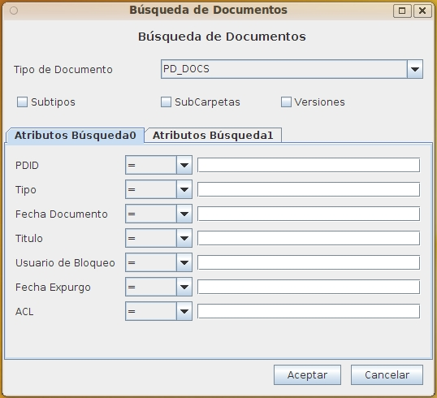
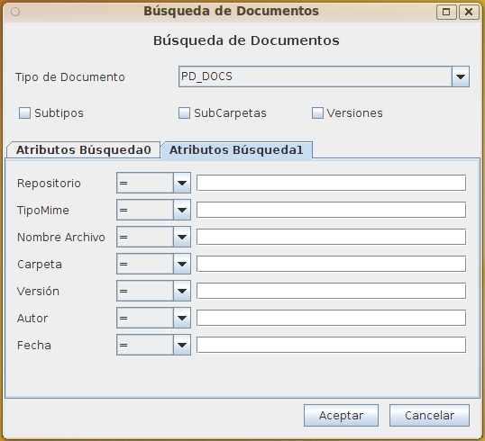

Búsqueda de Documentos OpenProdoc
Este formulario permite buscar documentos por una combinación de diversos criterios. Al elegir el tipo documental aparecerán los metadatos propios de ese tipo documental así como los comunes a todos los tipos
Además de los atributos propios del tipo documental elegido, siempre se puede buscar por una combinación:
- PDID: Identificador único del documento. Es la forma más rápida de localizar un documento.
- Tipo Documental: Permite localizar todos los documento de un tipo. (Ej. "Informes Financieros")
- Fecha del documento: Permite localizar documento por su fecha.
- Titulo del documento: Permite localizar documento por su Titulo.
- Usuario de bloqueo: Para filtrar todos los documento que un usuario tiene bloqueados actualmente.(Ej. "Ann Smith")
- Fecha de expurgo: Fecha en que se destruirá el documento, eliminándolo de OPD.
- ACL del documento: Localización de documento con una política (ACL) de seguridad dada.(Ej. "Docs Confidenciales")
- Repositorio: Todos los documentos almacenados en un repositorio dado (pueden ser documentos de varios tipos o incluso del mismo si el repositorio cambio).
- Tipo Mime: Búsqueda de acuerdo al formato físico del archivo.(Ej. "application/pdf")
- Nombre Archivo: Permite buscar por el nombre original del archivo (Ej. "Informe 2345.pdf".
- Carpeta: Permite buscar los documentos contenidos en una carpeta por el PDID (identificador único) de la carpeta.
- Versión: Filtra de acuerdo al número/etiqueta de la versión (Ej. "V 0.5 Borrador dirección).
- Autor: Para filtrar todos los documento que un usuario ha creado o modificado.(Ej. "Pedro Perez").
- Fecha: Búsqueda de acuerdo a la fecha/hora de inserción o modificación del documento en el sistema.
Adicionalmente a los metadatos, hay tres opciones que puede activarse y cuyo efecto en la búsqueda es el siguiente:
- Subtipos: Por defecto solo se busca documentos del tipo actual. Si se activa se buscará además en todos los subtipos hasta cualquier número de niveles.
- SubCarpetas: Por defecto se buscará documentos independientemente de su ubicación. Si se activa se restringe la búsqueda únicamente a la carpeta actual y todas sus subcarpetas hasta cualquier número de niveles..
- Versiones: Por defecto se buscará solo sobre la versión vigente de los documentos. Si se activa se recuperará cualquier versión de un documento que cumpla las condiciones.


Debe elegirse siempre criterios lo más restrictivos posible para obtener un número reducido de resultados. En otro caso la búsqueda puede tardar mucho tiempo y provocar problemas por exceso de resultados.
Al pulsar aceptar se iniciará la búsqueda de los documentos que cumplen los criterior especificados y se devolverá una lista. Sobre esa lista, seleccionando un documento, puede realizarse las mismas operaciones que sobre un documento seleccionado al abrir una carpeta.
Índice Ayuda OpenProdoc